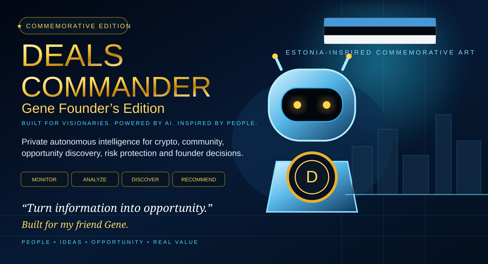

01 // CRYPTO RADAR
Know the environment
Monitors permitted Solana, crypto, market, regulatory, security and competitor signals, then filters noise.

Private commemorative page. No wallet is connected, no trade can be placed, and no public campaign can be launched from this page.
Deals Commander is a private autonomous intelligence and decision-support workflow built around Gene’s Deals Coin work: crypto intelligence, community signals, opportunity discovery, referral economics, factual content preparation, claim verification, risk detection and founder-approved execution. The machine handles the noise. Gene keeps the authority.
DEALS COMMANDER — GENE BRIEF 247 signals reviewed in demonstration set 11 potentially relevant 4 verified 2 require founder attention #1 OPPORTUNITY A relevant crypto community is discussing a problem Deals Coin may be positioned to address. Recommended action: review prepared partnership approach. Confidence: HIGH #2 RISK Potential unsupported promotional claim detected. Recommended action: verify, document, and prepare a correction if necessary. Confidence: MEDIUM-HIGH Everything else: no action required.
Monitors permitted Solana, crypto, market, regulatory, security and competitor signals, then filters noise.
Tracks public community questions, sentiment, messaging consistency, funnel health and authorized performance data.
Scores partnerships, creator communities, customer-demand signals and emerging distribution opportunities.
Attributes legitimate acquisition, conversion, L1/L2/L3 activity and realized revenue while optimizing for genuine demand.
Prepares factual posts, FAQs, announcements, educational material and campaign concepts for approval.
Checks token, referral, regulatory and market claims against current primary sources before public use.
Flags impersonation, suspicious promotion, unsupported earnings claims and inconsistent published terms.
Produces ranked decisions: what happened, why it matters, recommended action, confidence and approve/modify/ignore.
“Some people just make the mission better.”
This Founder’s Commemorative Edition is for Gene — a friend, crypto builder and problem-solver. The visual treatment is Estonia-inspired based on Jake’s recollection of Gene’s roots, while the workflow itself is designed for global use.
No exact hometown is asserted here; the commemorative artwork intentionally stays at the country-inspired level.